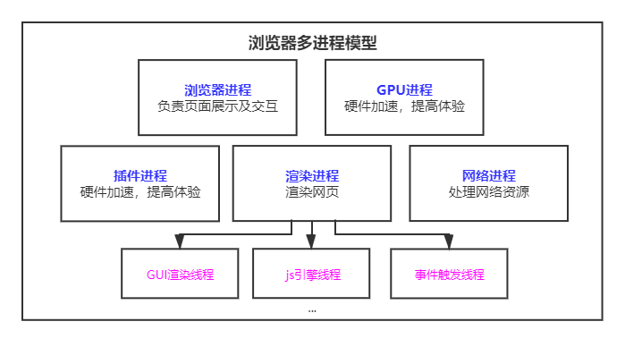
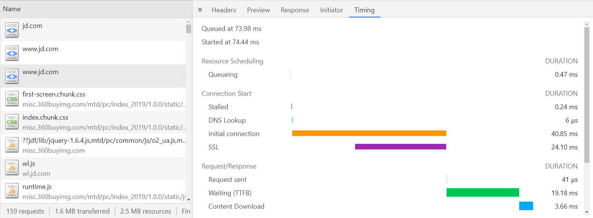
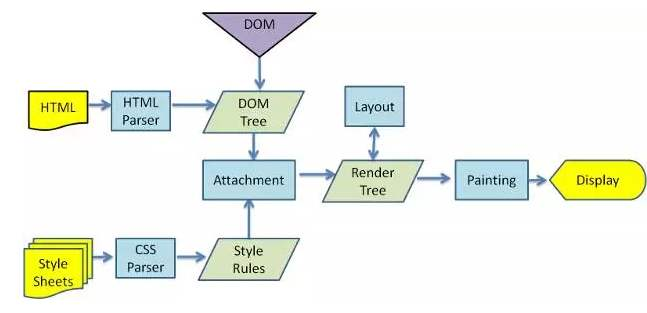
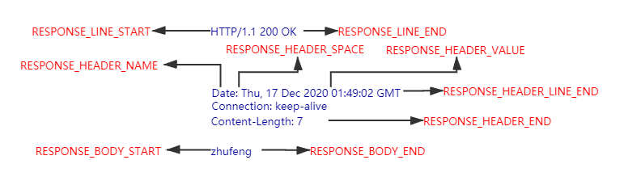
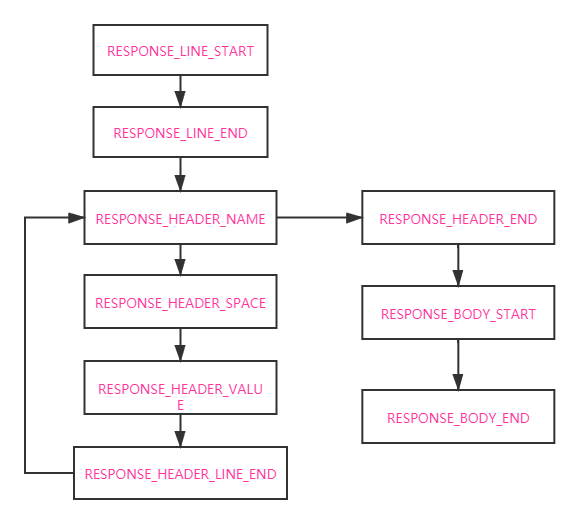
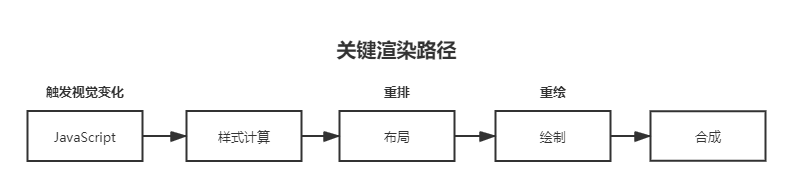
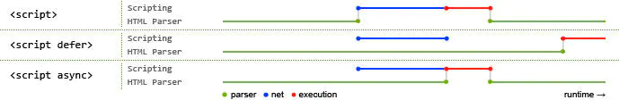
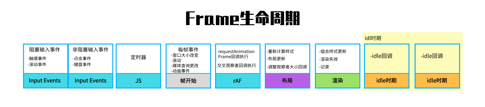

浏览器渲染原理与性能优化
一.进程与线程
- 进程是操作系统资源分配的基本单位，进程中包含线程。
- 线程是由进程所管理的。为了提升浏览器的稳定性和安全性，浏览器采用了多进程模型。
浏览器中的（5个）进程

浏览器进程：负责界面显示、用户交互、子进程管理，提供存储等。
渲染进程：每个也卡都有单独的渲染进程，核心用于渲染页面。
网络进程：主要处理网络资源加载(
HTML、CSS,、JS等)GPU进程：3d绘制,提高性能插件进程： chrome中安装的一些插件
二.从输入URL到浏览器显示页面发生了什么?
用户输入的是关键字还是URL？ 如果是关键字则使用默认搜索引擎生产URL
1.浏览器进程的相互调用
- 在浏览器进程中输入
url地址开始导航。并准备渲染进程 - 在网络进程中发送请求，将响应后的结果交给渲染进程处理
- 解析页面，加载页面中所需资源
- 渲染完毕，展示结果
我们开始细化每一步流程，并且从流程中提取我们可以优化的点。
2.URL请求过程
浏览器查找当前URL是否存在缓存，如果有缓存、并且缓存未过期，直接从缓存中返回。
查看域名是否已经被解析过了，没有解析过进行
DNS解析将域名解析成IP地址，并增加端口号如果请求是
HTTPS，进行SSL协商利用
IP地址进行寻址，请求排队。同一个域名下请求数量不能多余6个。排队后服务器创建
TCP链接 （三次握手）利用
TCP协议将大文件拆分成数据包进行传输(有序传输)，可靠的传输给服务器（丢包重传），服务器收到后按照序号重排数据包 （增加TCP头部，IP头部）发送HTTP请求（请求行，请求头，请求体）
HTTP 1.1中支持keep-alive属性,TCP链接不会立即关闭，后续请求可以省去建立链接时间。服务器响应结果（响应行，响应头，响应体）
返回状态码为301、302时，浏览器会进行重定向操作。（重新进行导航）
返回304则查找缓存。（服务端可以设置强制缓存）
通过network Timing 观察请求发出的流程：

Queuing: 请求发送前会根据优先级进行排队，同时每个域名最多处理6个TCP链接，超过的也会进行排队，并且分配磁盘空间时也会消耗一定时间。Stalled:请求发出前的等待时间（处理代理，链接复用）DNS lookup:查找DNS的时间initial Connection:建立TCP链接时间SSL:SSL握手时间（SSL协商）Request Sent:请求发送时间（可忽略）Waiting(TTFB) :等待响应的时间，等待返回首个字符的时间Content Dowloaded:用于下载响应的时间
蓝色：
DOMContentLoaded:DOM构建完成的时间红色：
Load:浏览器所有资源加载完毕
本质上，浏览器是方便一般互联网用户通过界面解析和发送HTTP协议的软件
3.HTTP发展历程
HTTP/0.9 在传输过程中没有请求头和请求体，服务器响应没有返回头信息，内容采用ASCII字符流来进行传输 HTML
HTTP/1.0 增加了请求头和响应头，实现多类型数据传输
HTTP/1.1 默认开启持久链接，在一个TCP链接上可以传输多个HTTP请求 ， 采用管线化的方式（每个域名最多维护6个TCP持久链接）解决队头阻塞问题 （服务端需要按顺序依次处理请求）。完美支持数据分块传输（
chunk transfer），并引入客户端cookie机制、安全机制等。HTTP/2.0 解决网络带宽使用率低 （TCP慢启动，多个TCP竞争带宽，队头阻塞）采用多路复用机制（一个域名使用一个TCP长链接，通过二进制分帧层来实现）。头部压缩（
HPACK）、及服务端推送HTTP/3.0 解决TCP队头阻塞问题， 采用
QUIC协议。QUIC协议是基于UDP的 （目前：支持和部署是最大的问题）HTTP明文传输,在传输过程中会经历路由器、运营商等环节，数据有可能被窃取或篡改 （安全问题）
对比HTTP/1.1 和 HTTP/2 的差异
4.渲染流程

- 1.浏览器无法直接使用HTML，需要将HTML转化成DOM树。（
document） - 2.浏览器无法解析纯文本的
CSS样式，需要对CSS进行解析,解析成styleSheets。CSSOM（document.styleSeets） - 3.计算出DOM树中每个节点的具体样式（Attachment）
- 4.创建渲染（布局）树，将DOM树中可见节点，添加到布局树中。并计算节点渲染到页面的坐标位置。（layout）
- 5.通过布局树，进行分层 （根据定位属性、透明属性、transform属性、clip属性等）生产图层树
- 6.将不同图层进行绘制，转交给合成线程处理。最终生产页面，并显示到浏览器上 (Painting,Display)
查看layer并对图层进行绘制的列表
三.模拟请求->渲染流程
请求报文格式
- 起始行：[方法][空格][请求URL][HTTP版本][换行符]
- 首部： [首部名称][:][空格][首部内容][换行符]
- 首部结束：[换行符]
- 实体
响应报文格式
- 起始行：[HTTP版本][空格][状态码][空格][原因短语][换行符]
- 首部：[首部名称][:][空格][首部内容][换行符]
- 首部结束： [换行符]
- 实体


1.基于TCP发送HTTP请求
const net = require('net')
class HTTPRequest {
constructor(options) {
this.method = options.method || 'GET';
this.host = options.host || '127.0.0.1';
this.port = options.port || 80;
this.path = options.path || '/';
this.headers = options.headers || {}
}
send(body) {
return new Promise((resolve, reject) => {
body = Object.keys(body).map(key => (`${key}=${encodeURIComponent(body[key])}`)).join('&');
if (body) {
this.headers['Content-Length'] = body.length;
};
const socket = net.createConnection({
host:this.host,
port:this.port
},()=>{
const rows = [];
rows.push(`${this.method} ${this.path} HTTP/1.1`);
Object.keys(this.headers).forEach(key=>{
rows.push(`${key}: ${this.headers[key]}`);
});
let request = rows.join('\r\n') + '\r\n\r\n' + body;
socket.write(request)
});
socket.on('data',function(data){
// data 为发送请求后返回的结果
})
})
}
}
async function request() {
const request = new HTTPRequest({
method: 'POST',
host: '127.0.0.1',
port: 3000,
path: '/',
headers: {
name: 'zhufeng',
age: 11
}
});
let { responseLine, headers, body } = await request.send({ address: '北京' });
}
request();
2
3
4
5
6
7
8
9
10
11
12
13
14
15
16
17
18
19
20
21
22
23
24
25
26
27
28
29
30
31
32
33
34
35
36
37
38
39
40
41
42
43
44
45
46
47
48
49
50
51
52
2.解析响应结果
const parser = new HTTPParser()
socket.on('data',function(data){
// data 为发送请求后返回的结果
parser.parse(data);
if(parser.result){
resolve(parser.result)
}
});
2
3
4
5
6
7
8
3.解析HTML
let stack = [{ type: 'document', children: [] }];
const parser = new htmlparser2.Parser({
onopentag(name, attributes) {
let parent = stack[stack.length - 1];
let element = {
tagName: name,
type: 'element',
children: [],
attributes,
parent
}
parent.children.push(element);
element.parent = parent;
stack.push(element);
},
ontext(text) {
let parent = stack[stack.length - 1];
let textNode = {
type: 'text',
text
}
parent.children.push(textNode)
},
onclosetag(tagname) {
stack.pop();
}
});
parser.end(body)
2
3
4
5
6
7
8
9
10
11
12
13
14
15
16
17
18
19
20
21
22
23
24
25
26
27
28
4.解析CSS
const cssRules = [];
const css = require('css');
function parserCss(text) {
const ast = css.parse(text);
cssRules.push(...ast.stylesheet.rules);
}
2
3
4
5
6
const parser = new htmlparser2.Parser({
onclosetag(tagname) {
let parent = stack[stack.length - 1];
if (tagname == 'style') {
parserCss(parent.children[0].text);
}
stack.pop();
}
});
2
3
4
5
6
7
8
9
5.计算样式
function computedCss(element) {
let attrs = element.attributes; // 获取元素属性
element.computedStyle = {}; // 计算样式
Object.entries(attrs).forEach(([key, value]) => {
cssRules.forEach(rule => {
let selector = rule.selectors[0];
if ((selector == '#'+value && key == 'id') || (selector == '.'+value && key == 'class')) {
rule.declarations.forEach(({ property, value }) => {
element.computedStyle[property] = value;
})
}
})
});
}
2
3
4
5
6
7
8
9
10
11
12
13
14
6.布局绘制
function layout(element) {
// 计算位置 -> 绘制
if (Object.keys(element.computedStyle).length != 0) {
let { background, width, height, top, left } = element.computedStyle
let code = `
let canvas = document.getElementById('canvas');
canvas.width = window.innerWidth;
canvas.height = window.innerHeight ;
let context = canvas.getContext("2d")
context.fillStyle = "${background}";
context.fillRect(${top}, ${left}, ${parseInt(width)}, ${parseInt(height)});
`
fs.writeFileSync('./code.js', code);
}
}
2
3
4
5
6
7
8
9
10
11
12
13
14
15
总结：DOM如何生成的
当服务端返回的类型是
text/html时，浏览器会将收到的数据通过HTMLParser进行解析 (边下载边解析)在解析前会执行预解析操作，会预先加载
JS、CSS等文件字节流 -> 分词器 -> Tokens -> 根据token生成节点 -> 插入到 DOM树中
遇到
js:在解析过程中遇到script标签，HTMLParser会停止解析，（下载）执行对应的脚本。在
js执行前，需要等待当前脚本之上的所有CSS加载解析完毕（js是依赖css的加载）

CSS样式文件尽量放在页面头部，CSS加载不会阻塞DOM tree解析,浏览器会用解析出的DOM TREE和CSSOM进行渲染，不会出现闪烁问题。如果CSS放在底部，浏览是边解析边渲染，渲染出的结果不包含样式，后续会发生重绘操作。JS文件放在HTML底部，防止JS的加载、解析、执行堵塞页面后续的正常渲染
通过
PerformanceAPI监控渲染流程
四.Perfomance API

| 关键时间节点 | 描述 | 含义 |
|---|---|---|
TTFB | time to first byte(首字节时间) | 从请求到数据返回第一个字节所消耗时间 |
TTI | Time to Interactive(可交互时间) | DOM树构建完毕，代表可以绑定事件 |
DCL | DOMContentLoaded (事件耗时) | 当 HTML 文档被完全加载和解析完成之后，DOMContentLoaded 事件被触发 |
L | onLoad (事件耗时) | 当依赖的资源全部加载完毕之后才会触发 |
FP | First Paint（首次绘制) | 第一个像素点绘制到屏幕的时间 |
FCP | First Contentful Paint(首次内容绘制) | 首次绘制任何文本，图像，非空白节点的时间 |
FMP | First Meaningful paint(首次有意义绘制) | 首次有意义绘制是页面可用性的量度标准 |
LCP | Largest Contentful Paint(最大内容渲染) | 在viewport中最大的页面元素加载的时间 |
FID | First Input Delay(首次输入延迟) | 用户首次和页面交互(单击链接，点击按钮等)到页面响应交互的时间 |
<div style="background:red;height:100px;width:100px"></div>
<h1 elementtiming="meaningful">珠峰架构</h1>
<script>
window.onload = function () {
let ele = document.createElement('h1');
ele.innerHTML = 'zf';
document.body.appendChild(ele)
}
setTimeout(() => {
const {
fetchStart,
requestStart,
responseStart,
domInteractive,
domContentLoadedEventEnd,
loadEventStart
} = performance.timing;
let TTFB = responseStart - requestStart; // ttfb
let TTI = domInteractive - fetchStart; // tti
let DCL = domContentLoadedEventEnd - fetchStart // dcl
let L = loadEventStart - fetchStart;
console.log(TTFB, TTI, DCL, L)
const paint = performance.getEntriesByType('paint');
const FP = paint[0].startTime;
const FCP = paint[1].startTime; // 2s~4s
}, 2000);
let FMP;
new PerformanceObserver((entryList, observer) => {
let entries = entryList.getEntries();
FMP = entries[0];
observer.disconnect();
console.log(FMP)
}).observe({ entryTypes: ['element'] });
let LCP;
new PerformanceObserver((entryList, observer) => {
let entries = entryList.getEntries();
LCP = entries[entries.length - 1];
observer.disconnect();
console.log(LCP); // 2.5s-4s
}).observe({ entryTypes: ['largest-contentful-paint'] });
let FID;
new PerformanceObserver((entryList, observer) => {
let firstInput = entryList.getEntries()[0];
if (firstInput) {
FID = firstInput.processingStart - firstInput.startTime;
observer.disconnect();
console.log(FID)
}
}).observe({ type: 'first-input', buffered: true });
</script>
2
3
4
5
6
7
8
9
10
11
12
13
14
15
16
17
18
19
20
21
22
23
24
25
26
27
28
29
30
31
32
33
34
35
36
37
38
39
40
41
42
43
44
45
46
47
48
49
50
51
52
53
54
55
56
五.网络优化策略
减少HTTP请求数，合并
JS、CSS,合理内嵌CSS、JS合理设置服务端缓存，提高服务器处理速度。 (强制缓存、对比缓存)
// Expires/Cache-Control Etag/if-none-match/last-modified/if-modified-since1避免重定向，重定向会降低响应速度 (301,302)
使用
dns-prefetch,进行DNS预解析采用域名分片技术，将资源放到不同的域名下。接触同一个域名最多处理6个TCP链接问题。
采用
CDN加速加快访问速度。(指派最近、高度可用)gzip压缩优化 对传输资源进行体积压缩 (html,js,css)// Content-Encoding: gzip1加载数据优先级 :
preload（预先请求当前页面需要的资源）prefetch（将来页面中使用的资源） 将数据缓存到HTTP缓存中<link rel="preload" href="style.css" as="style">1
六.关键渲染路径

重排（回流）
Reflow： 添加元素、删除元素、修改大小、移动元素位置、获取位置相关信息重绘
Repaint：页面中元素样式的改变并不影响它在文档流中的位置。
我们应当尽可能减少重绘和回流
1.强制同步布局问题
JavaScript强制将计算样式和布局操作提前到当前的任务中
<div id="app"></div>
<script>
function reflow() {
let el = document.getElementById('app');
let node = document.createElement('h1');
node.innerHTML = 'hello';
el.appendChild(node);
// 强制同步布局
console.log(app.offsetHeight);
}
requestAnimationFrame(reflow)
</script>
2
3
4
5
6
7
8
9
10
11
12
2.布局抖动（layout thrashing）问题
在一段js代码中，反复执行布局操作，就是布局抖动
function reflow(){
let el = document.getElementById('app');
let node = document.createElement('h1');
node.innerHTML = 'hello';
el.appendChild(node);
// 强制同步布局
console.log(app.offsetHeight);
}
window.addEventListener('load',function(){
for(let i = 0 ; i<100;i++){
reflow();
}
});
2
3
4
5
6
7
8
9
10
11
12
13
3.减少回流和重绘
脱离文档流
渲染时给图片增加固定宽高
尽量使用
css3动画可以使用will-change提取到单独的图层中
七.静态文件优化
1.图片优化
图片格式：
jpg:适合色彩丰富的照片、banner图；不适合图形文字、图标（纹理边缘有锯齿），不支持透明度png:适合纯色、透明、图标，支持半透明；不适合色彩丰富图片，因为无损存储会导致存储体积大gif:适合动画，可以动的图标；不支持半透明，不适和存储彩色图片webp:适合半透明图片，可以保证图片质量和较小的体积svg格式图片:相比于jpg和jpg它的体积更小,渲染成本过高,适合小且色彩单一的图标;
图片优化：
避免空
src的图片减小图片尺寸，节约用户流量
img标签设置alt属性， 提升图片加载失败时的用户体验原生的
loading:lazy图片懒加载<img loading="lazy" src="./images/1.jpg" width="300" height="450" />1不同环境下，加载不同尺寸和像素的图片
<img src="./images/1.jpg" sizes="(max-width:500px) 100px,(max-width:600px) 200px" srcset="./images/1.jpg 100w, ./images/3.jpg 200w">1对于较大的图片可以考虑采用渐进式图片
采用
base64URL减少图片请求采用雪碧图合并图标图片等
2.HTML优化
- 语义化
HTML:代码简洁清晰，利于搜索引擎，便于团队开发 - 提前声明字符编码，让浏览器快速确定如何渲染网页内容
- 减少HTML嵌套关系、减少DOM节点数量
- 删除多余空格、空行、注释、及无用的属性等
- HTML减少
iframes使用 (iframe会阻塞onload事件可以动态加载iframe) - 避免使用table布局
3.CSS优化
减少伪类选择器、减少样式层数、减少使用通配符
避免使用
CSS表达式，CSS表达式会频繁求值， 当滚动页面，或者移动鼠标时都会重新计算 (IE6,7)background-color: expression( (new Date()).getHours()%2 ? "red" : "yellow" );1删除空行、注释、减少无意义的单位、
css进行压缩使用外链
css,可以对CSS进行缓存添加媒体字段，只加载有效的
css文件<link href="index.css" rel="stylesheet" media="screen and (min-width:1024px)" />1CSS contain属性,将元素进行隔离减少@import使用，由于@import采用的是串行加载
4.JS优化
通过
async、defer异步加载文件
减少DOM操作，缓存访问过的元素
操作不直接应用到DOM上，而应用到虚拟DOM上。最后一次性的应用到DOM上。
使用
webworker解决程序阻塞问题IntersectionObserverconst observer = new IntersectionObserver(function(changes) { changes.forEach(function(element, index) { if (element.intersectionRatio > 0) { observer.unobserve(element.target); element.target.src = element.target.dataset.src; } }); }); function initObserver() { const listItems = document.querySelectorAll('img'); listItems.forEach(function(item) { observer.observe(item); }); } initObserver();1
2
3
4
5
6
7
8
9
10
11
12
13
14
15虚拟滚动
vertual-scrolll-listrequestAnimationFrame、requestIdleCallback
尽量避免使用
eval, 消耗时间久使用事件委托，减少事件绑定个数。
尽量使用canvas动画、
CSS动画
5.字体优化
@font-face {
font-family: "Bmy";
src: url("./HelloQuincy.ttf");
font-display: block;
/* block 3s 内不显示, 如果没加载完毕用默认的 */
/* swap 显示老字体 在替换 */
/* fallback 缩短不显示时间， 如果没加载完毕用默认的 ，和block类似*/
/* optional 替换可能用字体 可能不替换*/
}
body {
font-family: "Bmy"
}
2
3
4
5
6
7
8
9
10
11
12
FOUT(Flash Of Unstyled Text) 等待一段时间，如果没加载完成，先显示默认。加载后再进行切换。
FOIT(Flash Of Invisible Text)字体加载完毕后显示，加载超时降级系统字体 （白屏）
八. 优化策略
关键资源个数越多，首次页面加载时间就会越长
关键资源的大小，内容越小，下载时间越短
优化白屏：内联
css和内联js移除文件下载,较小文件体积预渲染，打包时进行预渲染
使用
SSR加速首屏加载（耗费服务端资源），有利于SEO优化。 首屏利用服务端渲染，后续交互采用客户端渲染
九.浏览器的存储
cookie: cookie过期时间内一直有效，存储大小4k左右、同时限制字段个数，不适合大量的数据存储，每次请求会携带cookie,主要可以利用做身份检查。- 设置
cookie有效期 - 根据不同子域划分
cookie较少传输 - 静态资源域名和
cookie域名采用不同域名，避免静态资源访问时携带cookie
- 设置
localStorage: chrome下最大存储5M, 除非手动清除，否则一直存在。利用localStorage存储静态资源function cacheFile(url) { let fileContent = localStorage.getItem(url); if (fileContent) { eval(fileContent) } else { let xhr = new XMLHttpRequest(); xhr.open('GET', url, true); xhr.onload = function () { let reponseText = xhr.responseText eval(reponseText); localStorage.setItem(url, reponseText) } xhr.send() } } cacheFile('/index.js');1
2
3
4
5
6
7
8
9
10
11
12
13
14
15
16sessionStorage: 会话级别存储，可用于页面间的传值indexDB:浏览器的本地数据库 （基本无上限）let request = window.indexedDB.open('myDatabase'); request.onsuccess = function(event){ let db = event.target.result; let ts = db.transaction(['student'],'readwrite') ts.objectStore('student').add({name:'zf'}) let r = ts.objectStore('student').get(5); r.onsuccess = function(e){ console.log(e.target.result) } } request.onupgradeneeded = function (event) { let db = event.target.result; if (!db.objectStoreNames.contains('student')) { let store = db.createObjectStore('student', { autoIncrement: true }); } }1
2
3
4
5
6
7
8
9
10
11
12
13
14
15
16
十.增加体验 PWA（Progressive Web App）
webapp用户体验差（不能离线访问），用户粘性低（无法保存入口），pwa就是为了解决这一系列问题,让webapp具有快速，可靠，安全等特点
Web App Manifest:将网站添加到桌面、更类似native的体验Service Worker:离线缓存内容,配合cache APIPush Api&Notification Api: 消息推送与提醒App Shell&App SkeletonApp壳、骨架屏
十一.LightHouse使用
npm install lighthouse -g
lighthouse http://www.taobao.com
2
可以根据lighthouse中的建议进行页面的优化
requestFrameAnimation requestAdleCallback
图片 contain